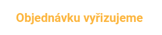

Rozhodl jsem se postavit si Bleskomat. Oslovil mě koncept jednoduchého a levného zařízení, kterým lze onboardovat nové lidi do Bitcoinu přímo po Lightning network, aniž by dotyčný musel platit velký on-chain poplatek (ideálně si předpřipravit pěněženku podle mého návodu). Součástky jsem objednal podle githubu, nyní čekám na dodání a budu vás o průběhu informovat
Zde je video, jak postavit celý bleskomat step-by-step, určitě se mně i vám může hodit.